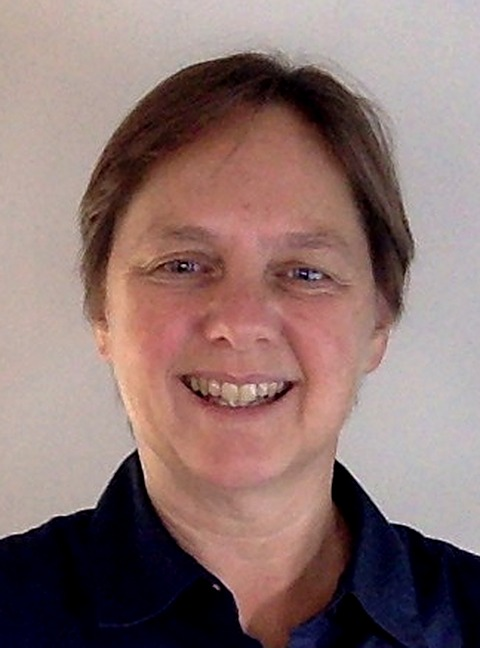

Tanya Schmah Associate Professor · Department of Mathematics and Statistics · University of Ottawa
Email: tschmah [at] uottawa.ca
Office: STEM Complex, room 543
Address: 150 Louis-Pasteur Pvt, Ottawa, ON, Canada K1N 6N5
Office: STEM Complex, room 543
Address: 150 Louis-Pasteur Pvt, Ottawa, ON, Canada K1N 6N5
Research interests
Statistical machine learning, image registration, geometric mechanics